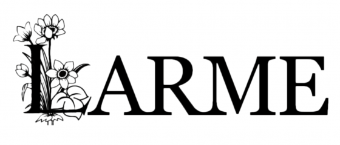

神奈川縣
神奈川縣
西元1996年6月11日出生 （歲）
AB型
 雙子座
子鼠
雙子座
子鼠

2003年加入ジュネス
2007年加入星塵傳播
2008年11月23日桃色幸運草於【東京．飯田橋ラムラ】的街頭演唱，與早見朱莉一起加入成員，並以虎面登場
2009年【SDP Bunko ☆百田夏菜子．早見朱莉簽名會☆（SDP Bunko ☆百田夏菜子．早見朱莉サイン会イベント☆）】時佐佐木彩夏在最後戴著黑帽子扮演【阿玲．Jackson】，隨著【Billie Jean】BGM將手套交給了有安杏果，埋下有安杏果【words of the mind -brandnew journey-】向【Michael Jackson】致敬的經典橋段：手套配備與月球漫步演出伏筆
2009年09月20日【桃色幸運草 CHAMPION CARNIVAL AKBA 5DAYS（ももいろクローバー CHAMPION CARNIVAL AKBA 5DAYS）】決定了永遠的代表色
2009年【AKBA桃草大型運動鑑測對抗賽 ～鄰里最強～（AKBAももクロ対抗大運動測定会 ～そして路地裏へ～）】與玉井詩織和有安杏果倒數三人組成【運動音痴組（うんちっちーず）】
2009年因遭球擊造成右手大拇指骨折
2010年【主流Tour 2010 春季最強錦標戰 ～約二十八回合炎之對抗～（メジャーツアー 2010 春の最強タッグ決定戦 ～炎の約28番勝負～）】開始與玉井詩織組成【兔兔學姐學妹（うさぎ先輩後輩）】
2010年會員限定演唱【BUDOUKAN旅行團（BUDOUKANツアー）】與百田夏菜子、玉井詩織、早見朱莉組成【桃色AGE（ももいレージ）】演唱
2011年由日本文化廳舉辦【文化庁メディア芸術祭 ドルトムント展 2011】遠征【德國．多特蒙德．Borussia Dortmund】
2012年於【東京．六本木ヒルズ】參與【夢見るMyマイメロディ展】活動，設計專屬的【マイメロディ】
2012年廣告【LOTTE】冰淇淋【爽】配合奧運宣傳，部分廣告代表色轉換藍色系服飾
2012年由馬來西亞青年及體育部舉辦【National Youth Day Celebration（HARI BELIA NEGARA 2012）】遠征【馬來西亞．布城】，並與馬來西亞首相【Najib Razak】握手與交流
2012年團體擔任【長崎クローバー大使】
2010年與玉井詩織擔任書籍【Chu→Boh vol.38】封面拍攝
2010年與玉井詩織、有安杏果擔任書籍【オタポケ 10月号】封面拍攝
2010年團體擔任書籍【HMV店頭誌】【HMV the music & movie master】【スーパーエンタメ新聞アニカンR Vol.80】【ネクストブレイクアイドル No.1】封面拍攝
2010年團體擔任書籍【週刊少年サンデー No.49】封面拍攝之一
2010年團體擔任書籍【B.L.T. U-17 Vol.16】封面拍攝版本之一
2011年團體擔任書籍【VOICHA！Vol.13】【スーパーエンタメ新聞アニカンR Vol.102】【週刊少年サンデー No.21】【スーパーエンタメ新聞アニカンR Vol.125】【ミューズクリップ】封面拍攝
2011年團體擔任書籍【TV Bros. 4月2日号】封面拍攝之一
2011年團體擔任書籍【CD Journal 8月号】【Cool-up IDOL 9月号】【サマー．アイドル7 2011 SUMMER】【スーパーエンタメ新聞アニカンR Vol.141】【楽遊 vol.22】封面拍攝
2011年擔任書籍【Chu→Boh vol.43】封面拍攝
2011年團體擔任書籍【POP'nアイドル！】【bounce 334号】封面拍攝版本之一
>2011年團體擔任書籍【B.L.T. U-17 Vol.20】【Top Yell 10月号】【Top Yell 1月号】【週刊ヤングジャンプ No.43】【週刊少年マガジン No.53】封面拍攝
2011年團體擔任書籍【週刊SPA！1月3．10合併号】【Quick Japan Vol.95】封面拍攝
2011年團體擔任書籍【J-POP GIRLS キュン！】【JUNON 11月号】【デジモノステーション 11月号】【CM NOW VOL.153】【DOMMUNE OFFICIAL GUIDE BOOK 2】封面拍攝之一
2012年團體擔任書籍【J-POP GIRLS キュン！vol.2】【月刊少年ライバル 4月号】【月刊少年ライバル 5月号】【HARAJUKU】【CM美少女U-19 SELECTION 100 2012】封面拍攝之一
2012年團體擔任書籍【月刊スカパー！2月号】【月刊少年ライバル 3月号】【Top Yell 3月号】【月刊HMV 3月号】【FREECELL 特別号】封面拍攝
2012年團體擔任書籍【週刊ヤングジャンプ No.15】【オリ☆スタ 3月19日号】【月刊ヤングマガジン No.4】【GIRL POP 2012 SPRING】【FREECELL 特別号 5】封面拍攝
2012年團體擔任書籍【Top Yell 6月号】【スカパー！TVガイド 6月号】【SWIMMER Ready Go！！スイマー&チョコホリック】【日経エンタテインメント！7月号】【Quick Japan Vol.102】封面拍攝
2012年團體擔任書籍【MARQUEE vol.91】【ch FILES 7月号】【MUSIC MAGAZINE 7月号】【Campus Walker】【風とロック 6月号】封面拍攝
2012年團體擔任書籍【日経TRENDY 7月号】【別冊少年マガジン 8月号】【週刊少年マガジン No.33】【花とゆめ 16号】【週刊少年マガジン No.35】封面拍攝之一
2012年團體擔任書籍【週刊ヤングジャンプ No.30】封面拍攝版本之一
2012年團體擔任書籍【週刊プレイボーイ No.29】【週刊少年マガジン No.34】【ニッポン放送タイムテーブル 8．9月号】【週刊ヤングジャンプ No.36】【月刊少年ライバル 9月号】封面拍攝
2012年團體擔任【しまむら】模特兒
2012年團體擔任書籍【B.L.T. PLUS VOL.4】【Top Yell 10月号】【De☆View 11月号】【週刊ビッグコミックスピリッツ 47号】封面拍攝
2012年團體擔任書籍【あえるアイドル大百科】【MUSIC MAGAZINE 増刊 アイドル．ソング．クロニクル 2002-2012】【月刊少年ライバル 10月号】【グループアイドル全力応援SPECIAL】【東京かわら版 467号】封面拍攝之一
【MBS「虹のかなた」】【フジテレビ「ハングリー！」】
【テレ朝動画「桃子連續劇（ももドラ）」】
【死亡筆記本 the Last name】 【ボクとタケダくん】【市民ポリス69】【モテキ】【NINIFUNI】
【白瞳（シロメ）】
【萬代】【麥當勞】【リクルート】【任天堂DS】【三菱電機】【東京JOYPOLIS】【康寶】【桃屋】【LOTTE】
【かよえ！チュー学】【猛烈宇宙海賊】
【TBS「上沼恵美子は見た！日常ワイド劇場」「イチオシ！さよならシュレック！山里亮太のブサイクだって幸せになれる SP」「ライブB♪」「カミスン！」「サンデージャポン」「情報7days ニュースキャスター」「TBS24時」「はなまるマーケット」「情熱大陸」「COUNT DOWN TV」「アッコにおまかせ！」】
【日本テレビ「おもいッきりDON！」「スッキリ」「PON！」「ズームイン！！サタデー」「アイドルちん」「ハッピーMusic」「しゃべくり007」「ダウンタウンDX」「シューイチ」「人生が変わる1分間の深イイ話」「メレンゲの気持ち」「うわっ！ダマされた大賞」「Oha！4」】【SMOOCH.TV「Pretty Women！in ebis」】
【日本テレビ「ロンブー&チュートの芸能人ヒットソングで爆笑ショーバトル！」「スター☆ドラフト会議」「ZIP！」「天才！志村どうぶつ園」「おしゃれイズム」「Music Lovers」「宝探しアドベンチャー 謎解きバトルTORE！」「AKBINGO！」「1億人の大質問！？笑ってコラえて！」「月曜よる9時はショーバト」】
【日本テレビ「news every.」「さんま&所の大河バラエティ！超近現代史！人間は相変わらずアホか！？」「1番ソングSHOW」】
【J:COM「U.K.のMUSIC JAPANリクエスト」】【関西テレビ「ランキンくえすと」「ミュージャック」「さんまのまんま」「臨時発売！さんまのまんま大全集」】【スカパー！AT-X「Club AT-X だぶるあ～る」】【全国音楽情報TV番組「MUSIC B.B.」】【CSテレ朝チャンネル「ジャガイモン！」】
【フジテレビ「なべあちっ！」「めざましテレビ」「ミューサタ」「魁！音楽番付 Eight」「笑っていいとも！」「HEY！HEY！HEY！」「ネプリーグ」「MUSIC FAIR」「GIRLS' FACTORY」「新堂本兄弟」「はねるのとびら」「めざにゅ～」「知りたがり！」「とくダネ！」「VS嵐」「Mr.サンデー」「ノンストップ！」】
【フジテレビ「めざましどようび」「ユメノハシラ」「志村けんのバカ殿様」「ドリフ大爆笑35周年人気スターが選んだ爆笑コント20」】
【スペースシャワーTV Plus「ヘビロテ！」「ザ．プロデューサーズ -前山田健一-」】【スペースシャワーTV「爆裂★エレキングダム！！」「NEW CUTS」「BIG HITS！」】【CBCテレビ「花咲かタイムズ」】【毎日放送「ちちんぷいぷい」「せやねん！」】【テレビ岩手「ねだらX」「ピラメキーノ」】
【フジテレビ動画コンテンツ「つか金フライデーX」】【NHK Eテレ「大！天才てれびくん」「シャキーン！」】【GAORA「全日本プロレススペシャル」】【CSフジテレビONE「綾小路翔の六本木バナナボーイズ」「GIRLS' FACTORY」】【Ustream「TAMASHII NATION 2011 前夜祭スペシャル放送」】【BS朝日「コサキンDEラジオ！」】
【東海テレビ「バナナマンのブログ刑事」「まるナツ 美浜海遊祭LIVE ～MUSIC WAVE 2011～」】【TOKYO MX「U．LA．LA」「U．LA．LA@7」】【テレビ東京「ぶちぬき」「おはスタ」「ゴッドタン」「ポケモンスマッシュ！」「祝15周年！ポケモン映画名シーン超ランキングスペシャル！！」「ウレロ☆未完成少女」「JAPAN COUNTDOWN」】
【北海道放送「札幌美少女図鑑」「スープカレー 0辛」】【テレビ北海道「遊びなDJサタデー」】【青森朝日放送「○っと！」】【名古屋テレビ「バグルー！！」「CONTACT CAFE C」】【テレビ埼玉「THE BEAT TIME」「ごごたま」「HOT WAVE」「玉ニュータウン」】【仙台放送「あらあらかしこ」】【岩手めんこいテレビ「BEATNIKS」】
【WOWOW「戦慄のメタル．オールナイト」「SUMMER SONIC 2012」】【フジテレビNEXT「氣志團DEBUT 10th Anniversary 極東ROCK'N'ROLL HIGH SCHOOLドキュメント」「さだまさしThe Birthday Party in Masashi Super Arena」「氣志團万博 2012 スペシャル番組」】【MUSIC ON！TV「Artist File」】【九州朝日放送「ドォーモ」】
【ニコニコ生放送「電波研究社 ～アニメ．ゲーム．アニソン～」「ミュージックボンバー」「Animelo Summer Live 2011 -rainbow- ダイジェスト」「劇団ひとり、バカリズム、東京03と一緒に『ウレロ☆未完成少女』最終回を見よう！」】【NHK BSプレミアム「J-MELO」「音楽熱帯夜」】【NHKワンセグ2「ワンセグ☆ふぁんみ」】
【テレビ朝日「FUTURE TRACKS→R」「さきっちょ☆」「見逃しチャンネル」「やじうまテレビ！」「お願い！ランキング」「今すぐ観たい！テレ朝動画アイドル SP」「おかずのクッキング」】【スカパー！「GIRLS POP NEXT」「アイドル"独断と偏見"情報局」「TOKYO IDOL FESTIVAL 2010」「スカパー！アワード 2012 授賞式」】
【NHK「J-MELO」「大科学実験」「あほやねん！すきやねん！」「スタジオパークからこんにちは」「もうすぐ9時プレマップ」「ミニ番組」「秋ナビ」】【長崎放送「報道センターNBC」】【福岡放送「めんたいワイド」】【高知さんさんテレビ「サタマガ」】【静岡朝日テレビ「とびっきり！しずおか」】【BS11「秋葉系アイドルチャンネル」】
【中部日本放送「IMPACT」】【BS-TBS「サキドリ！」】
【サムライちゃんねる「ちょっとバタバタしてまして：シーズン2」】【NHK Eテレ「青山ワンセグ開発」】
【goomo「桃草心跳加速初體驗日記！（ももクロドッキドキ初体験日記！）」】【スカパー！「附屬小國高中桃子蝦學園 ～桃色幸運草部（小中高一貫ももえび学園 ～ももいろクローバーの部）」】【文化放送デジタルラジオ 超！A&G+「桃色幸運草的每日桃子頻道！（ももいろクローバーの毎日ももチャンネル！）」】
【テレ朝動画「桃草Chan（ももクロChan）」】【スカパー！AT-X「朝氣桃子丼～馬上開動！（すたもも丼～いただきやすっ！）」】【日本テレビ「桃色幸運草Z緊急特別節目！桃草想在日本電視台搞事！？SP（ももいろクローバーZ緊急特番！ももクロが日テレで何かやらかすらしいぞ！？SP）」】
【スペースシャワーTV Plus「桃色幸運草Z SP（ももいろクローバーZ スペシャル）」「桃草2小時宣傳Z！SP（ももクロが2時間ジャックだZ！スペシャル）」「桃草3小時宣傳Z！SP（ももクロが3時間ジャックだZ！スペシャル）」「桃色幸運草Z 人氣排行榜（ももいろクローバーZ リクエストカウントダウン）」】
【テレビ朝日「桃草Chan Z！！（ももクロChanだZ！！）」「桃草Chan ～桃色幸運草Z Channel～（ももクロChan ～ももいろクローバーZ Channel～）」】【CS TBSチャンネル「桃草團一舉放送（ももクロ団一挙放送）」】【関西テレビ「桃草 VS 百人喪屍 SAVE（ももクロ VS 100人のゾンビ SAVE）」】【テレビ東京「UFI的未完成TV（UFIの未完成TV）」】
【スペースシャワーTV「桃色幸運草Z MUSIC VIDEO SPECIAL（ももいろクローバーZ MUSIC VIDEO SPECIAL）」】【TBS「桃草團（ももクロ団）」】【MUSIC ON！TV「月刊 ももいろクローバーZ」】
【CSテレ朝チャンネル「桃草Chan副刊（別冊ももクロChan）」「桃草式實習指南 桃子實境！！（ももクロ式見学ガイド もも見！！）」「桃色幸運草Z 24小時大放送Z！！！（ももいろクローバーZ 24時間大放送だZ！！！）」】
【CSテレ朝チャンネル「與桃草一同觀賞！桃色幸運草Z LIVE SP 桃草夏季犯蠢主題樂園 SUMMER DIVE 2012 ～開幕戰～ NHK音樂廳大會篇＜桃草副聲道＞（ももクロちゃんと一緒に観よう！ももいろクローバーZライブスペシャル ももクロ夏のバカ騒ぎ SUMMER DIVE 2012 ～開幕戦～ NHKホール大会編＜副音声あり＞）」】
【スカパー！「スタ☆フェス ～週末ヒロインたちの夏～」「スタ☆どん」】
【NO LIFE TV「KIRA KIRA JAPON」】
【天神FM「Park Side Cafe」「Park Side Cafe Friday」】【FREE WAVE77.7「MORNING WAVE」「PARK SIDE CAFE」】【エフエム岩手「Do you！？」「MAX WAVESCAPE」】【ラヂオもりおか「FRIDAY POWER SESSION 2ND Half」】【YBSラジオ「Talk魂765 GO！GO！イチ」】【FM富士「WESTSIDE TOKYO」】【JFN系列「ダイノジのSCHOOL NINE」】
【ラジオ関西「王様ラジオキッズ」「歌声は風にのって」】【広島エフエム放送「庄司悟のリクエスト魂」】【CBCラジオ「ハイパーナイト．ナガオカ」「ごごイチ」「土曜天国ぴかラジ」】【下北FM「DJ Tomoaki's Radio Show！」】【FM NACK5「NACK ON TOWN」「The Nutty Radio Show おに魂」「夕焼けSHUTTLE」「IDOL SHOWCASE i-BAN！！」】
【K'z Station「おしゃべりやってまーす第2放送」】【TBSラジオ「週刊デジタリアン」「水曜JUNK 山里亮太の不毛な議論」「爆笑問題の日曜サンデー」「JUNKバナナマンのバナナムーンGOLD」】【NHKラジオ第1「渋マガZ」「つながるラジオ」】【FM福岡「BUTCH COUNTDOWN RADIO」】【東京FM「SCHOOL OF LOCK！」】
【ニッポン放送「ミューコミプラス」「ますおかちゃんねる」「サタデーキューティナイト アイドルスタジオNo.1」「テリー伊藤 サンデーのってけラジオ」「miwaのオールナイトニッポン」「ゆずのオールナイトニッポンGOLD」「吉田尚記 BUZZニッポン」】【MBSラジオ「上泉雄一のええなぁ」「MBSうたぐみ Smile × Songs」】
【AIR-G'「アーティストフラッシュ」「AV Music Channel」「Superduper Radio Next Generation」】【J-WAVE「RADIPEDIA」「東京REMIX族」】【FM大阪「スカッシュ！」「あつまれ！MUSIC COASTER」】【FM青森「NTTドコモ青森 presets docomo sonic」】【HBCラジオ「彼女の流儀」「ベストテンほっかいどう」】【InterFM「YOUNG BLOOD」】
【FM FUJI「FEEL SO MUSE」】【FMヨコハマ「tre-sen」】【TOKYO FM「シンクロノシティ」】
【FM FUJI「桃草的LET'S LISTENING TIME！（ももクロちゃんのLET'S LISTENING TIME！）」】【文化放送「先行SP 桃色幸運草的桃子廣播（センパツスペシャル ももいろクローバーのももちゃんラジオ）」】【STAR digio 400ch.「週末女主角桃色幸運草Z的世界的桃草NO.1（週末ヒロインももいろクローバーZの世界のももクロNO.1）」】
【ニッポン放送「桃色幸運草的All Night Nippon Mobile（ももいろクローバーのオールナイトニッポンモバイル）」「桃色幸運草Z的All Night Nippon（ももいろクローバーZのオールナイトニッポンR）」「桃草俱樂部xoxo（ももクロくらぶxoxo）」】
【プチ エンジェル】【ピュアピュア】【ちゃお】【Prolog】【UTB】【UTB＋】【B.L.T.】【BOMB】【Kindai】【新潟WEEK！】【ch FILES】【週刊プレイボーイ】【Vivitto】【ヤンヤン】【週刊女性】【月刊スカパー！】【スカパー！TVガイド】【スカパー！e2TVガイド】【月刊Audition】【スコラ】【BUBKA】【FLASH】【CanCam】【SPUR】【カジカジ】
【memew】【BIG ONE】【Chu→Boh】【EX大衆】【週刊SPA！】【3B junior BOOK 2010 winter】【3B junior BOOK 2010 summer】【グラビアザテレビジョン】【オタポケ】【De☆View】【週刊ヤングジャンプ】【ボイチャ】【週刊ヤングマガジン】【オリ☆スタ】【ミューズクリップ】【声優アニメディア】【声優グランプリ】【アニカン】【HMV店頭誌】
【HMV the music & movie master】【iPopステーション】【Pick-up Voice】【朝日小学生新聞】【Hana*chu→】【スーパーエンタメ新聞アニカンR】【ゲームエンタ！】【ネクストブレイクアイドル】【DIME】【TV Bros.】【リスアニ！】【月刊エンタメ】【Club iT】【日経エンタテインメント】【Newtype】【ぴあ】【VOICHA！】【CD&DLデータ】
【What's In？】【Zipper】【CD Journal】【月刊HMV】【SWITCH】【GIRL POP】【Seventeen】【POP'nアイドル！】【読売新聞】【カンタン！カワイイ！造花DECO 楽屋ミラー 67 Style】【TOWER】【MUSIC MAGAZINE】【bounce】【Cool-up IDOL】【MORE】【3B junior BOOK 2011 SUMMER】【朝日新聞】【an．an】【週刊プロレス】【装苑】【音楽と人】
【週刊少年サンデー】【BIG ONE GIRLS】【週刊アスキー】【サマー．アイドル7】【MEN'S NON-NO】【MARQUEE】【楽遊】【ピチレモン】【Top Yell】【SPUR Pink】【GINZA】【J-POP GIRLS キュン！】【JUNON】【デジモノステーション】【ポポロ】【Fine】【CM NOW】【ViVi】【j-nude】【smart】【Wink up】【POTATO】【TV station】【宝島】
【THIS IS ME！！カルチャー界の未来を切り開く100名の女子クリエイターたち。】【TV LIFE】【Myojo】【ウレぴあ】【週刊少年マガジン】【ROCKIN'ON JAPAN】【ダ．ヴィンチ】【DOMMUNE OFFICIAL GUIDE BOOK 2】【NYLON JAPAN】【ミニスカ&モーレツ宇宙海賊公式ファンブック】【mina】【信濃毎日新聞】【Popteen】【月刊少年ライバル】
【音楽と人】【sweet】【VoCE】【STREET JACK】【Numero TOKYO】【りぼん】【月刊ヤングマガジン】【映画秘宝EX激動！アイドル10年史】【極東ロックンロール．ハイスクール 氣志團 VS】【HARAJUKU】【別冊サイゾー × PLANETS】【静岡新聞】【Little Twin Stars Fan】【FREECELL】【nicola】【CM美少女U-19 SELECTION 100 2012】【FRIDAY】
【TVfan】【Campus Walker】【風とロック】【GIRL'S STAR】【日経TRENDY】【別冊少年マガジン】【月刊Piano】【花とゆめ】【GO！GO！GUITAR】【ニッポン放送タイムテーブル】【B.L.T. U-17】【B.L.T. PLUS】【ケトル】【Sho-Comi】【アニカンRヤンヤン！！】【あえるアイドル大百科】【小学一年生】【女性自身】【アニメディア】【AERA】
【グループアイドル全力応援SPECIAL】【東京かわら版】【週刊ビッグコミックスピリッツ】【MOBSPROOF】【週刊新潮】
【桃子本 ～桃色幸運草公式寫真書～（もも本 ～ももいろクローバー公式ビジュアルブック～）】【STUDIO VOICE「特集☆桃色幸運草」號（STUDIO VOICE「特集☆ももいろクローバー」号）】
【『桃草Chan』Presents 十回合試練對抗 週末女主角 桃色幸運草Z（『ももクロChan』Presents 試練の十番勝負 週末ヒロイン ももいろクローバーZ）】【桃草PIA（ももクロぴあ）】
【桃草夏季犯蠢主題樂園 SUMMER DIVE 2012 Tour（ももクロ夏のバカ騒ぎ SUMMER DIVE 2012 Tour）】
【billboard JAPAN】【BARKS FEATURE】【ナタリー】
【惡魔積分】
【プチ エンジェル】【Very Little！】